Case file · UI/UX
CodePlay
A gamified app that makes learning to code feel like playing a game.
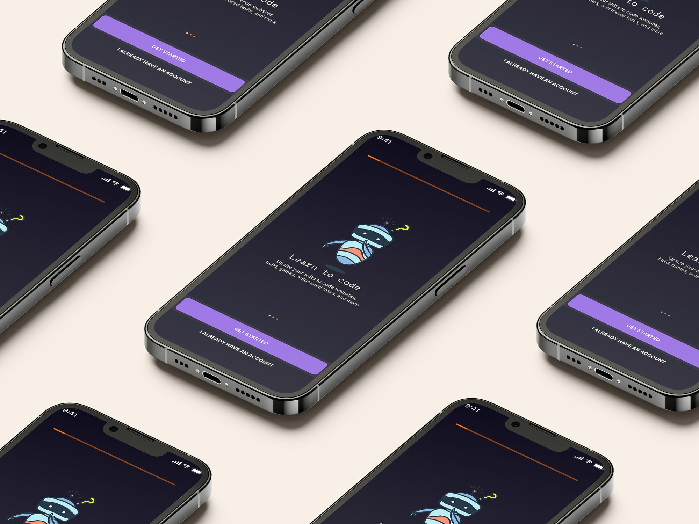
- Project
- Gamification app, UI/UX design
- Context
- School assignment
- Tools
- Figma
- Role
- Research, UX and UI design
01The brief
Design an app that uses gamification to change a behaviour. I chose learning to code: many beginners give up because lessons feel long, hard and lonely.
02The idea
Turn every lesson into a level. Short lessons, coding challenges with instant feedback, XP, badges, streaks and a weekly leaderboard with friends, guided by a friendly robot mascot. As Daniel, our user, put it: “I want to learn coding, but I don’t want it to feel like studying.”
03Research and structure
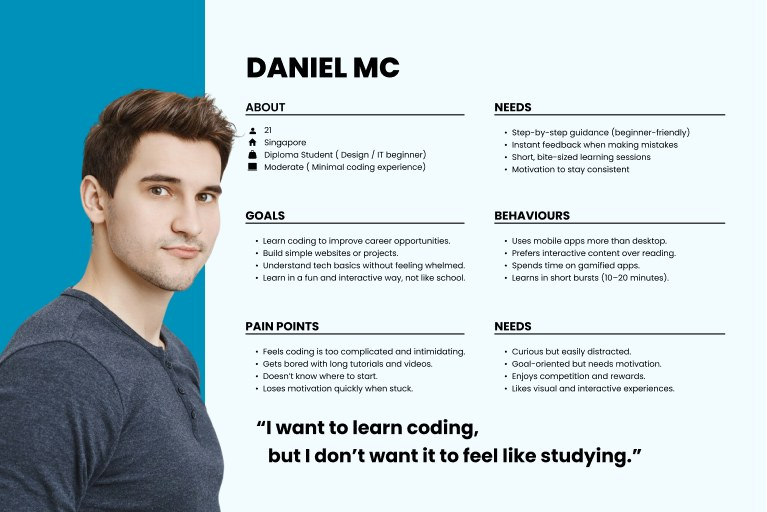
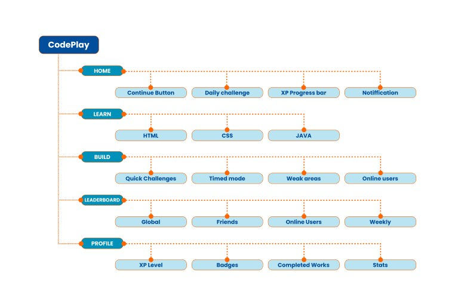
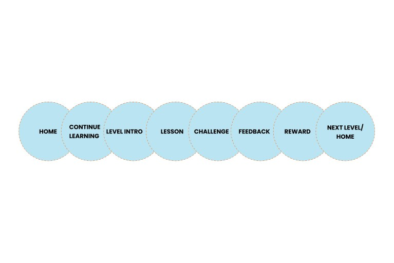
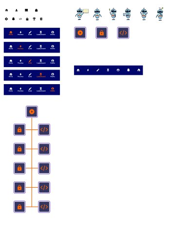
04Final screens
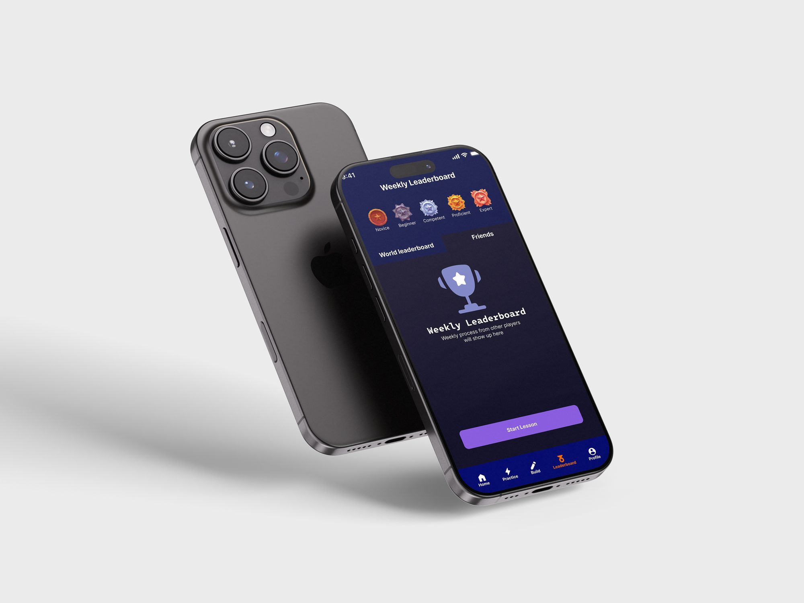
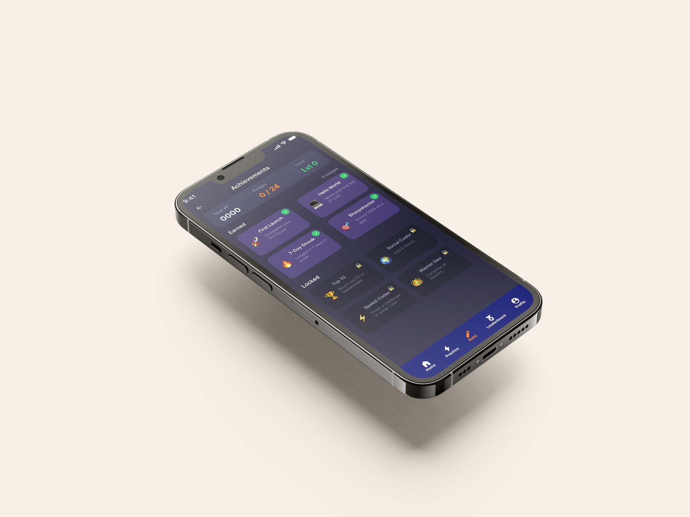
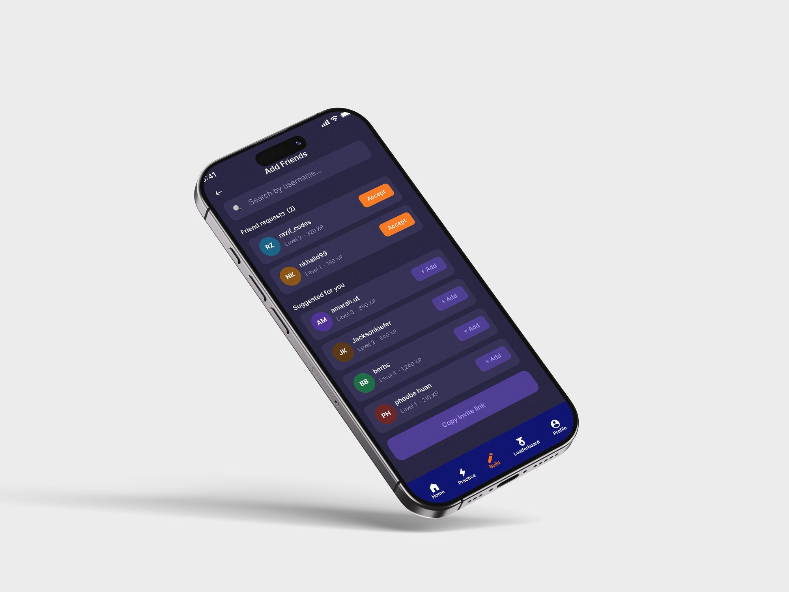
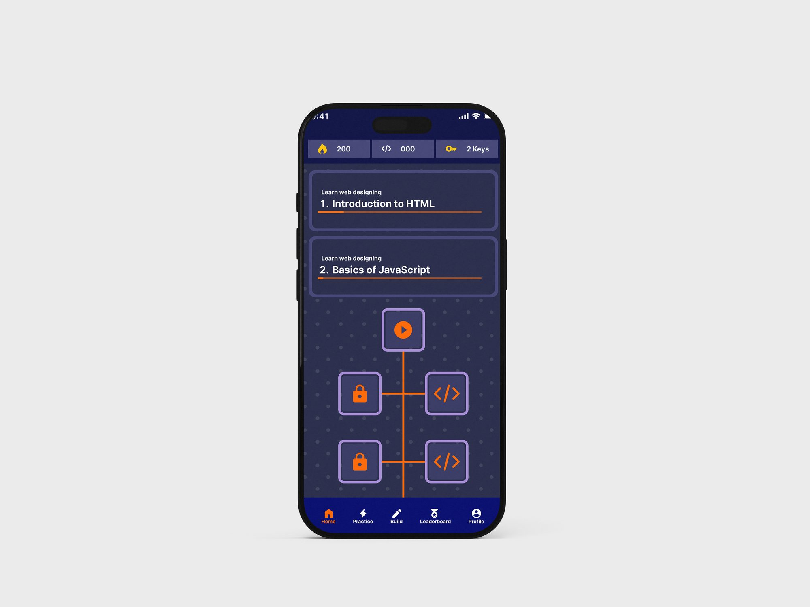
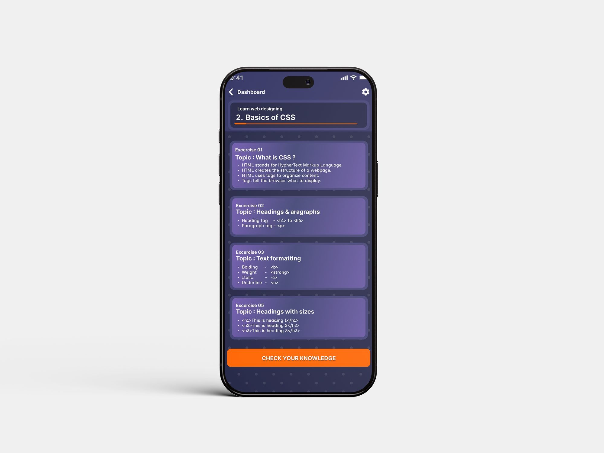
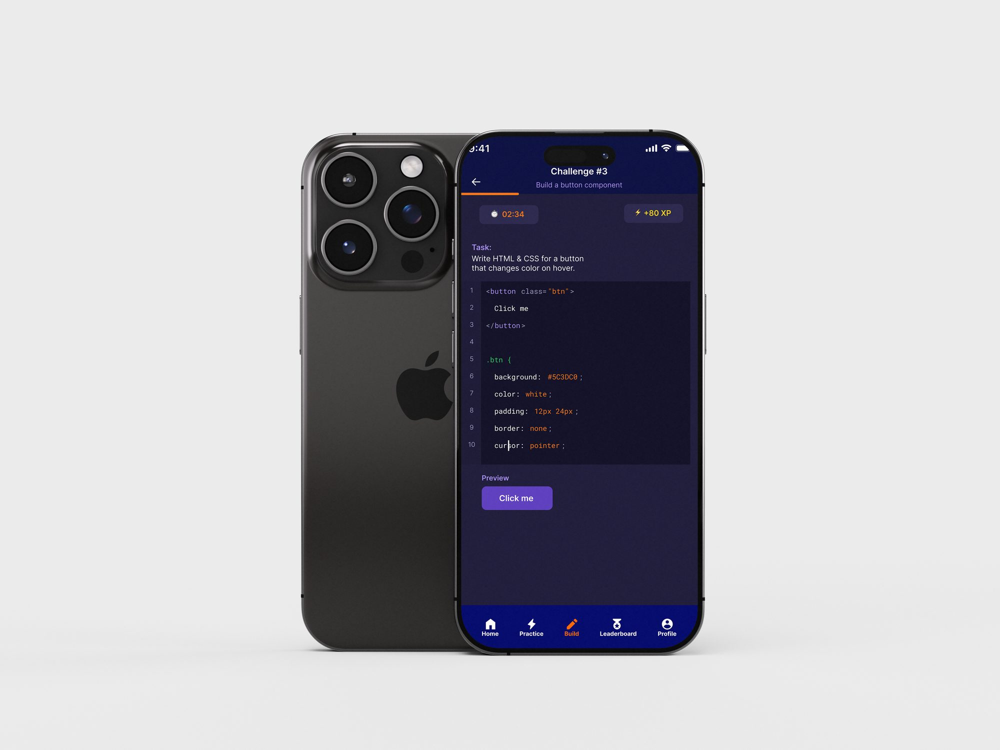
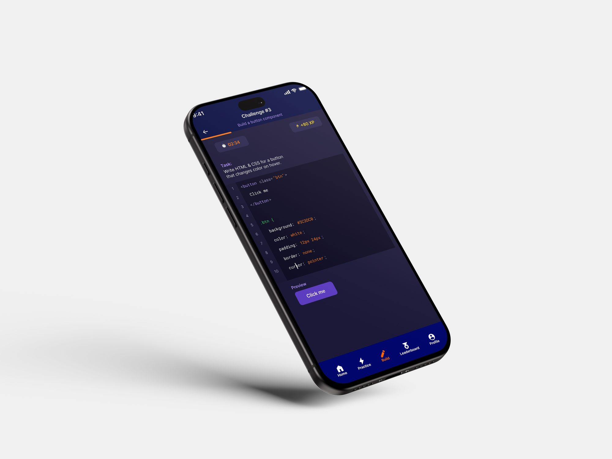
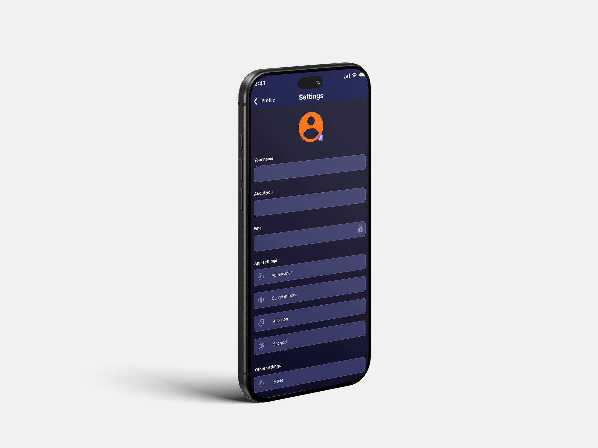